<!DOCTYPE html>
<html>
    <head>
        <title>My experiment</title>
        <script src="https://ajax.googleapis.com/ajax/libs/jquery/1.11.3/jquery.min.js"></script>
        <script src="jspsych-6.3.0/jspsych.js"></script>
        <script src="jspsych-6.3.0/plugins/jspsych-instructions.js"></script>
        <script src="jspsych-6.3.0/plugins/jspsych-call-function.js"></script>
        <script src="jspsych-6.3.0/plugins/jspsych-html-keyboard-response.js"></script>
        <script src="jspsych-6.3.0/plugins/jspsych-canvas-keyboard-response.js"></script>
        <script src="jspsych-6.3.0/plugins/jspsych-canvas-button-response.js"></script>
        <script src="jspsych-6.3.0/plugins/jspsych-fullscreen.js"></script>
        <script src="jspsych-6.3.0/plugins/jspsych-survey-multi-choice.js"></script>
        <script src="jspsych-6.3.0/plugins/jspsych-html-button-response.js"></script>
        <script src="jspsych-6.3.0/plugins/jspsych-html-keyboard-response.js"></script>
        <script src="jspsych-6.3.0/plugins/jspsych-preload.js"></script>
        <script src="jspsych-6.3.0/plugins/jspsych-survey-text.js"></script>
        
        <script src="src-dentist-e.js"></script>
        <link href="jspsych-6.3.0/css/jspsych.css" rel="stylesheet" type="text/css">
        <link rel="stylesheet" href="style-tree.css">
    </head>
    <body></body>
    <div>
    <script>
        var gamesTrials = [
                {
                    type: "game",
                    totalNumberOfTrials:2,
                    depth:3,
                    breadth:2,
                    block:1
                } ,
                {
                    type: "game",
                    totalNumberOfTrials:2,
                    depth:3,
                    breadth:2,
                    block:2
                } ,
                {
                    type: "game",
                    totalNumberOfTrials:1,
                    depth:3,
                    breadth:2,
                    block:3
                } ,
                {
                    type: "game",
                    totalNumberOfTrials:1,
                    depth:3,
                    breadth:2,
                    block:4
                },
                {
                    type: "game",
                    totalNumberOfTrials:1,
                    depth:3,
                    breadth:2,
                    block:5
                },
                {
                    type: "game",
                    totalNumberOfTrials:1,
                    depth:3,
                    breadth:2,
                    block:6
                }
            ]

        var practiceTrials = [
            {
                type: "practice",
                totalNumberOfTrials:1,
                depth:3,
                breadth:2,
                block:1
            },
        ]
        
        var gamesOrder = jsPsych.randomization.shuffle(gamesTrials); //gamesTrials.sort(() => Math.random() - 0.5)

        let experimentIndex = 0; //gameIndex
        let timeline = [];

        let trialIndex = 0;

        let preloaded_images = ['img_dentist_task/zoom.png', 'img_dentist_task/toolbar.png', 'img_dentist_task/keyboard.png', 'img_dentist_task/festival.png', 'img_dentist_task/shifts.png', 'img_dentist_task/noon_4.png', 'img_dentist_task/block_massage_e.png', 'img_dentist_task/instructions_choose_track.png', 'img_dentist_task/instructions_mark_chosen_track.png', 'img_dentist_task/morning_win_6.png', 'img_dentist_task/noon_win_3.png', 'img_dentist_task/night_win_4.png', 'img_dentist_task/practice/block_1.png','img_dentist_task/block_1.png', 'img_dentist_task/block_2.png', 'img_dentist_task/block_3.png', 'img_dentist_task/block_4.png', 'img_dentist_task/block_5.png', 'img_dentist_task/block_6.png']
        //foodtracks practice
        for(let i = 1; i < 2; i++) {
            for(let j = 2; j < 4; j++) {
                let fileName = 'img_dentist_task/practice/' + i + '_' + j + '_0' + '.png';
                preloaded_images.push(fileName);
            }
        }
        //foodtracks game
        for(let i = 1; i < 7; i++) {
            for(let j = 2; j < 4; j++) {
                let fileName = 'img_dentist_task/' + i + '_' + j + '_0' + '.png';
                preloaded_images.push(fileName);
            }
        }
        //shifts
        for(let i = 1; i < 4; i++) {
            let fileName = 'img_dentist_task/practice/' + i + '.png';
            preloaded_images.push(fileName);
            fileName = 'img_dentist_task/' + i + '.png';
            preloaded_images.push(fileName);
        }
        //rewards
        for(let i = 1; i < 7; i++) {
            let fileName = 'img_dentist_task/practice/rewards/lose_-' + i + '.png';
            preloaded_images.push(fileName);
            fileName = 'img_dentist_task/rewards/lose_-' + i + '.png';
            preloaded_images.push(fileName);
            fileName = 'img_dentist_task/practice/rewards/win_' + i + '.png';
            preloaded_images.push(fileName);
            fileName = 'img_dentist_task/rewards/win_' + i + '.png';
            preloaded_images.push(fileName);   
        }

    
        var preload = {
            type: 'preload',
            images: preloaded_images,
            auto_preload: true,
            show_detailed_errors: true
        };
    
        timeline.push(
            {
                timeline: [preload]
            }
        );

        /* var subjectNumber = {
            type: 'survey-text',
            questions: [
                {prompt: 'please enter prolific number', placeholder: '1234', required: true, name: 'subject'}
            ]
         }
         timeline.push(subjectNumber);
         */
        var subjectNumber = localStorage.URL_PROLIFIC_PID;
        
        var welcome = {
            type: 'instructions',
            pages: ['<p style="text-align: center">Welcome to the experiment <b>Find the Best Foodtrack</b></p><p style="text-align: left"<br><br><br><br>'
                + 'This following study consists of 3 parts :<br>'
                + '1. You will go through a tutorial of the game, followed by a short quiz regarding the rules of the game and practice stage.<br>'
                + '2. You will play the game with a break period in the middle.<br>'
                + '3. You will be asked to answer a few questioners.<br>'
                + '<br>You will be able to continue to the game only after you answered correctly all the questions in the quiz to follow the tutorial.'
                + 'The colors of the objects presented in the instructions as well as the characters that appear on them, are not the same as those in the game itself. Therefore, focus on understanding the rules of the game.</p>'],
            show_clickable_nav: true,
            button_label_next: 'Next',
            button_label_previous: 'Back'
            };
        

        //timeline.push(welcome);

        var zoom = {
            type: 'html-button-response',
            stimulus: '<p> Please make sure your browser\'s <b>zoom settings are set to 100%</b> as shown in the image below.<br><br>'
                + '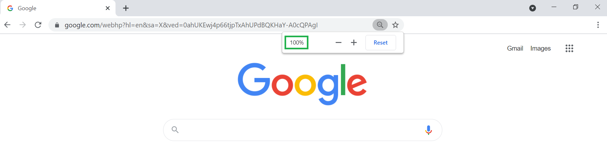'
                + "You can change the settings by pressing + or - or by pressing (- / + and Ctrl) on your keyboard.<br><br> "
                + "<b>Setting the zoom to 100% is essential for this experiment</b>.<br>"
            ,
            choices: ['I confirm that the browser zoom is set to 100% as shown in the image']
        };
        
        
        timeline.push(zoom)
        
        var toolbar = {
            type: 'html-button-response',
            stimulus: '<p style="text-align: left">Please make sure<b>that the browser download bar is closed</b> as shown in the image below.<br><br>'
                + '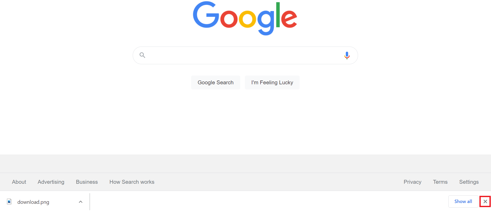'
                + 'The image shows how to close the download bar by <b>clicking on the X mark on the right</b>.',
            choices: ['I confirm that the browser download bar is closed']
        };
        
        timeline.push(toolbar)

        timeline.push({
                type: 'fullscreen',
                fullscreen_mode: true,
                message: '<p style="text-align: center">After pressing the button below you will switch to full screen view</p>',
                button_label: 'Continue to full screen view'
            });

        var cursor_off = {
            type: 'call-function',
            func: function() {
                document.body.style.cursor= "none";
            }
        }

        var cursor_on = {
            type: 'call-function',
            func: function() {
                document.body.style.cursor= "auto";
            }
        }

        var basicInstructions = {
                type: 'instructions',
                pages: ['<p style="text-align: center">Welcome to the experiment <b>Find the Best Food-Stall</b></p><p style="text-align: left"<br><br><br><br>'
                            + 'This following study consists of 3 parts :<br>'
                            + '1. You will go through a tutorial of the game, followed by a short quiz regarding the rules of the game and practice stage.<br>'
                            + '2. You will play the game with a break period in the middle.<br>'
                            + '3. You will be asked to answer a few questioners.<br>'
                            + '<br>You will be able to continue to the game only after you answered correctly all the questions in the quiz to follow the tutorial.'
                            + 'The colors of the objects presented in the instructions as well as the characters that appear on them, are not the same as those in the game itself. Therefore, focus on understanding the rules of the game.</p>',
                        
                        '<p style="text-align: center">Welcome to the experiment <b>Find the Best Food-Stall</b></p><br><br>'
                            +'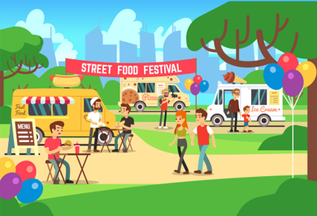<br><br><br>Now the first stage will begin, with the instructions of the game, a short test and training.',
                    
                        '<p style="text-align: center">Throughout the game you will be asked to make selections using:<br><b>"S"</b> - for chosing the left object<br><b>"K"</b> - for chosing the right object<br><br>'
                            +'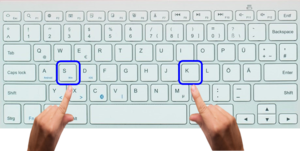',
                
                        '<p style="text-align: center"><b>Find the Best Food-Stall</b> tutorial</p>'
                            +'<p style="text-align: left">The annual festival is approaching and with it also food stalls, games and activities.</p>'
                            +'<p style="text-align: left">You will play the seller at the food stalls at the festival, and as such you are very excited and know that this is the best time of year to make a lot of money<br></p>'
                            +'<p style="text-align: left"><u>Your goal as a seller at the festival is to get the highest rating as possible in the various shifts</u><br></p>',
                            //+'',
                    
                        '<p style="text-align: center"><b>Find the Best Food-Stall</b> tutorial</p>'
                            +'<p style="text-align: left">Each day you will be asked to choose one of two food stalls that will be presented to you.<br>At the food stall you have chosen you will work for one day.<br></p>'
                            +'<p style="text-align: left">At the beginning of the next day you will be asked to choose again between two food stalls so that you will have several opportunities to choose each stall.</p>'
                            +'<p style="text-align: left"><u>Your goal as a seller at the festival is to get the highest rating as possible in the various shifts</u></p><br>',
                            //+'<br><br>',
                        
                        '<p style="text-align: center"><b>Find the Best Food-Stall</b> tutorial</p>'
                            +'<br><p style="text-align: left"><b>During the work day at the food stall you have chosen you will see what rating is given to you in each shift:&nbsp;&nbsp;&nbsp;&nbsp;&nbsp;&nbsp;&nbsp;&nbsp;&nbsp;&nbsp;&nbsp;&nbsp;&nbsp;&nbsp;&nbsp;&nbsp;&nbsp;&nbsp;&nbsp;&nbsp;&nbsp;&nbsp;&nbsp;&nbsp;&nbsp;&nbsp;&nbsp;&nbsp;&nbsp;&nbsp;&nbsp;&nbsp;&nbsp;&nbsp;&nbsp;&nbsp;&nbsp;&nbsp;&nbsp;&nbsp;&nbsp;&nbsp;&nbsp;&nbsp;&nbsp;&nbsp;&nbsp;&nbsp;&nbsp;&nbsp;&nbsp;&nbsp;&nbsp;&nbsp;&nbsp;&nbsp;&nbsp;&nbsp;&nbsp;&nbsp;&nbsp;&nbsp;&nbsp;&nbsp;&nbsp;&nbsp;&nbsp;&nbsp;&nbsp;&nbsp;&nbsp;&nbsp;&nbsp;&nbsp;&nbsp;&nbsp;&nbsp;&nbsp;&nbsp;&nbsp;&nbsp;&nbsp;&nbsp;&nbsp;&nbsp;&nbsp;&nbsp;&nbsp;&nbsp;&nbsp;&nbsp;&nbsp;&nbsp;&nbsp</b><br>'
                            +'<ol><li style="text-align: left">First - you will see your rating in the morning shift, which will be marked by sun and cloud</li>'
                            +'<li style="text-align: left">Second - you will see your rating in the noon shift, which will be marked by sun</li>'
                            +'<li style="text-align: left">Third - you will see your rating in the night shift, which will be marked by moon</li></ol>'
                            +'<p style="text-align: left">You can see the icons that symbolize the different shifts in the image below:<br></p>'
                            +'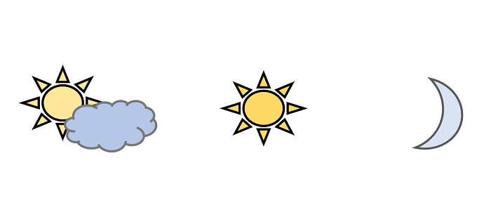<br>',
                        
                        '<p style="text-align: center"><b>Find the Best Food-Stall</b> tutorial</p>'
                            +'<br><p style="text-align: left">In each shift you will receive a maximum rating of 6 stars.</p>'
                            +'<br><p style="text-align: left">As mentioned before, your goal as a seller at the festival is to get the highest rating as possible in the various shifts<u>.</u></p>'
                            +'<br><p style="text-align: left">For example, getting a 4-star rating in the lunch shift would look like this:</p>'
                            +'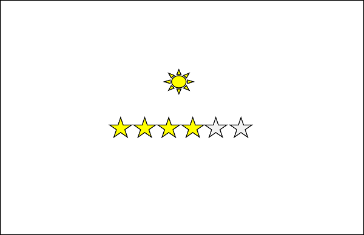<br>',

                        '<p style="text-align: center"><b>Find the Best Food-Stall</b> tutorial</p>'
                            +'<p style="text-align: left">After several days of choosing between two specific food stalls, they will change and you will be asked to make choices between two new stalls.&nbsp;&nbsp;&nbsp;&nbsp;&nbsp;&nbsp;&nbsp;&nbsp;&nbsp;&nbsp;&nbsp;&nbsp;&nbsp;&nbsp;&nbsp;&nbsp;&nbsp;&nbsp;&nbsp;&nbsp;&nbsp;&nbsp;&nbsp;&nbsp;&nbsp;&nbsp;&nbsp;&nbsp;&nbsp;&nbsp;&nbsp;&nbsp;&nbsp;&nbsp;&nbsp;&nbsp;&nbsp;&nbsp;&nbsp;&nbsp;&nbsp;&nbsp;&nbsp;&nbsp;&nbsp;&nbsp;&nbsp;&nbsp;&nbsp;&nbsp;&nbsp;&nbsp;&nbsp;&nbsp;&nbsp;&nbsp;&nbsp;&nbsp;&nbsp;&nbsp;&nbsp;&nbsp;&nbsp;&nbsp;&nbsp;&nbsp;&nbsp;&nbsp;&nbsp;&nbsp;&nbsp;&nbsp;&nbsp;&nbsp;&nbsp;&nbsp;&nbsp;&nbsp;&nbsp;&nbsp;&nbsp;&nbsp;&nbsp;&nbsp;&nbsp;&nbsp;&nbsp;&nbsp;&nbsp;&nbsp;&nbsp;&nbsp;&nbsp;&nbsp<br></p>'
                            +'<p style="text-align: left">A message regarding the change will appear on the screen, along with the option for a brief refresh breake can be seen in the example below:<br><br></p>'
                            +'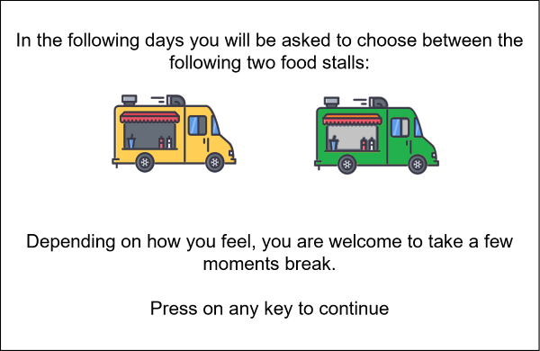<br><br>',
                        
                        '<p style="text-align: center"><b>Find the Best Food-Stall</b> tutorial</p>'
                            +'<p style="text-align: left"><u>Your goal as a seller at the festival is to get the highest rating as possible in the various shifts.</u>&nbsp;&nbsp;&nbsp;&nbsp;&nbsp;&nbsp;&nbsp;&nbsp;&nbsp;&nbsp;&nbsp;&nbsp;&nbsp;&nbsp;&nbsp;&nbsp;&nbsp;&nbsp;&nbsp;&nbsp;&nbsp;&nbsp;&nbsp;&nbsp;&nbsp;&nbsp;&nbsp;&nbsp;&nbsp;&nbsp;&nbsp;&nbsp;&nbsp;&nbsp;&nbsp;&nbsp;&nbsp;&nbsp;&nbsp;&nbsp;&nbsp;&nbsp;&nbsp;&nbsp;&nbsp;&nbsp;&nbsp;&nbsp;&nbsp;&nbsp;&nbsp;&nbsp;&nbsp;&nbsp;&nbsp;&nbsp;&nbsp;&nbsp;&nbsp;&nbsp;&nbsp;&nbsp;&nbsp;&nbsp;&nbsp;&nbsp;&nbsp;&nbsp;&nbsp;&nbsp;&nbsp;&nbsp;&nbsp;&nbsp;&nbsp;&nbsp;&nbsp;&nbsp;&nbsp;&nbsp;&nbsp;&nbsp;&nbsp;&nbsp;&nbsp;&nbsp;&nbsp;&nbsp;&nbsp;&nbsp;&nbsp;&nbsp;&nbsp;&nbsp<br></p>'
                            +'<p style="text-align: left">At each step, two food stalls will appear on the screen, as in the example below.</p>'
                            +'<p style="text-align: left">You will be asked to choose which booth you would like to work on that day using the keyboard keys:<br>"S" for the left food stall<br>"K" for the right food stall<br><br></p>'
                            +'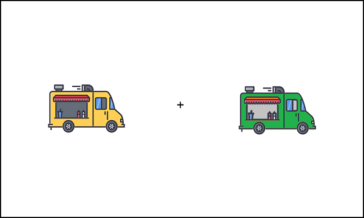<br><br>',

                        '<p style="text-align: center"><b>Find the Best Food-Stall</b> tutorial</p>'
                            +'<p style="text-align: left">Your goal as a seller at the festival is to get the highest rating as possible in the various shifts.<br>That means finding the food stall that entitles for the highest rating</p>'
                            +'<p style="text-align: left">The position of the food stalls on the screen (right or left on the screen) may change over the days<b> but it does not affect the stall rating</b></p>',
                        
                        '<p style="text-align: left">After selecting the specific food stall using the keyboard keys, it will be highlighted by a frame and the additional object will disappear.<br>As in the example below:</p>'
                            +'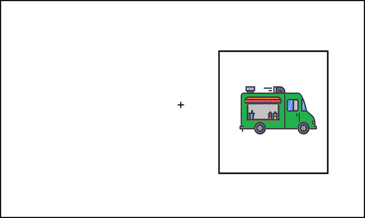<br><br>',

                        '<p style="text-align: left">Then a "+" sign will appear on the screen.<br>It will be followed by the icon that symbolizes the morning shift, and immediately afterwards the rating you received at this food stall for the morning shift will be added.</p>'
                            +'<p style="text-align: left">For example in the example below you can see that the rating on the morning shift is 6 stars</p>'
                            +'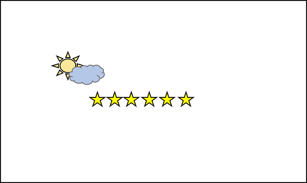<br><br>',
                        
                        '<p style="text-align: left">The lunch shift icon will then appear, and immediately afterwards the rating you received will be added to the selected food stall for the lunch shift.</p>'
                            +'<p style="text-align: left">For example in the example below you can see that the rating on the lunch shift is 3 stars</p>'    
                            +'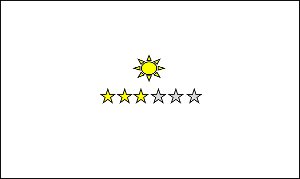<br><br>',
                            
                        '<p style="text-align: left">The night shift icon will then appear, and immediately after that the rating you received will be added to the selected food stall for the night shift.</p>'
                            +'<p style="text-align: left">For example in the example below you can see that the rating on the night shift is 4 stars</p>'    
                            +'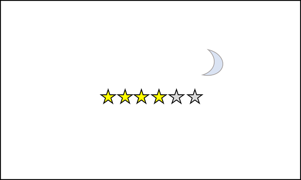<br><br>',
                            
                        
                        '<p style="text-align: center"><u>Four important things to remember:</u></p>'
                            +'<ol><li style="text-align: left">Your goal in the game is to get as high a cumulative rating as possible.</li>'
                            +'<li style="text-align: left">For each food stall selection you will see the rating in three shifts: morning, noon and night.</li>'
                            +'<li style="text-align: left">After a few days of choosing between two specific food stalls you will move on to choosing between two other food stalls.</li>'
                            +'<li style="text-align: left">The position of the food stalls on the screen can change over the days but it does not affect the ranking.</li></ol>'
                            +'<p style="text-align: left">Goodluck!</p>',
                        
                        ],
                show_clickable_nav: true,
                button_label_next: 'Next',
                button_label_previous: 'Back'
        };
        
        var start_instructions_test = {
            on_start: function () {
                if (document.querySelector('#cursor-toggle') != null)
                    document.querySelector('#cursor-toggle').remove()
            },
            type: 'html-keyboard-response',
            stimulus: "<p> <br><br>You will now move on to a short questionnaire which checks if you have understood the instructions.<br><b>In order to continue the game you must answer all the questions in the questionnaire correctly.</b><br>Press any key to continue</p>"
        }

        var page_1_options = ["2", "1", "4"];
        var page_2_options = ["Click on the object with the mouse","Pressing 'S' and 'K' keys", "Pressing the arrows keys"];
        var page_3_options = ["False", "True"];
        var page_4_options = ["False", "True"];
        var page_5_options = ["Two shifts - morning and night", "One shift - noon", "Three shifts - morning, noon and night"];
        var page_6_options = ["Three stars", "Six stars", "Ten stars"];
        var page_7_options = ["Find the highest rated food stall on the night shift","Get the highest rating for the morning shift", "Find the food stall whose rank in the three shifts is the highest"];

        var instructions_test = {
        type: 'survey-multi-choice',
        questions: [
            {prompt: "How many objects will be displayed on the screen at each step?", name: 'question_1', correct: "2", options: page_1_options, required:true}, 
            {prompt: "How can you choose the food stall you want to work that day?", name: 'question_2', correct: "Pressing 'S' and 'K' keys",options: page_2_options, required: true},
            {prompt: "Will the location of the food stalls on the screen be fixed throughout the searches?", name: 'question_3', correct: "False",options: page_3_options, required: true},
            {prompt: "The location of the food stalls on the screen does not affect the obtained ranking?", name: 'question_4', correct: "True",options: page_4_options, required: true},
            {prompt: "How many shifts will you see each day?", name: 'question_5', correct: "Three shifts - morning, noon and night",options: page_5_options, required: true},
            {prompt: "What is the maximum rating you can get in each shift?", name: 'question_6', correct: "Six stars",options: page_6_options, required: true},
            {prompt: "What is your goal in the game?", name: 'question_7', correct: "Find the food stall whose rank in the three shifts is the highest",options: page_7_options, required: true},
            ],
        };
        var if_trial = {
            type: 'html-button-response',
            stimulus: "<p>We are sorry, you made a mistake<br>"
                + "Go back to the instructions"
                + "Please read the instructions again and answer the questionnaire<br>"
                + "Thank you and good luck",
            choices: ['Back to instructions']
        }
        var to_repeat;
        var check_answers = {
            timeline: [if_trial],
            conditional_function: function () {
                // get the data from the previous trial,
                // and check which key was pressed
                to_repeat = false;
                json = jsPsych.data.get().filter({trial_type: 'survey-multi-choice'}).last(1).select('response').values[0];
                var responses_to_test = json;//JSON.parse(json);
                for (i = 0; i < instructions_test.questions.length; i++) {
                    current_name = instructions_test.questions[i].name;
                    current_correct = instructions_test.questions[i].correct
                    if (current_correct != responses_to_test[current_name]) {
                        to_repeat = true;
                        return to_repeat
                    }
                    else {
                        to_repeat = false;

                    }
                }
                return to_repeat
            }
        }

        var instructions_loop = {
                timeline: [start_instructions_test, instructions_test, check_answers],
                timeline: [basicInstructions, start_instructions_test, instructions_test, check_answers],
                loop_function: function () {
                    return to_repeat;
                }
            }

        
        timeline.push(instructions_loop);

        var fixation = {
                type: 'canvas-keyboard-response',
                stimulus: function (c) {
                    drawText(c, '+');
                },
                choices: jsPsych.NO_KEYS,
                trial_duration: 500,
            }
        
            
        
        var startPractice = {
            type: 'html-button-response',
            stimulus: '<p style="text-align: center"></b></p>'
            +'<p style="text-align: center">Now you will start the practice<br>Remember, your goal is to find the food stall with the highest cumulative rating<br></p>',
            choices: ['Start practice']
        }; 
        
        var practiceStartBlock = {
            timeline: [createStartBlock(practiceTrials[experimentIndex].block, practiceTrials[experimentIndex].type)]
        };
        var practice = {
            timeline: [fixation, createTreeNode(practiceTrials, practiceTrials[experimentIndex].depth, experimentIndex, trialIndex, practiceTrials[experimentIndex].depth, 1, practiceTrials[experimentIndex].block)]
        };        

        var startGame = {
            type: 'html-button-response',
            stimulus: '<p style="text-align: center"></b></p>'
            +'<p style="text-align: center">You will now start the game:<b>Find the Best Food-Stall</b><br></p>',
            choices: ['Start the game']
        };    

        timeline.push(startPractice);
        timeline.push(cursor_off);
        timeline.push(practiceStartBlock);
        timeline.push(practice);

        jsPsych.init({
            timeline: timeline,
            show_preload_progress_bar: true,
            on_finish: function () {
                //snumber = jsPsych.data.get().filter({trial_type: 'survey-text'}).last(1).select('response').values[0]['subject'];
                jsPsych.data.addProperties({subject: subjectNumber});
                var dataPractice = jsPsych.data.get();
                experimentIndex = 0;
                trialIndex = 0;
                timeline = [];
                var gameStartBlock = {
                    timeline: [createStartBlock(gamesOrder[experimentIndex].block, gamesOrder[experimentIndex].type)]
                };
                var experiment = {
                    timeline: [fixation, createTreeNode(gamesOrder, gamesOrder[experimentIndex].depth, experimentIndex, trialIndex, gamesOrder[experimentIndex].depth, 1, gamesOrder[experimentIndex].block)]
                };
                timeline.push(cursor_on);
                timeline.push(startGame);
                timeline.push(cursor_off);
                timeline.push(gameStartBlock);
                timeline.push(experiment);
                
                jsPsych.init({
                    timeline: timeline,
                    on_finish: function () {
                        jsPsych.data.addProperties({subject: subjectNumber});
                        var dataGame = jsPsych.data.get();
                        var data = dataPractice.join(dataGame);
                        data.localSave('csv','mydata.csv');
                        jsPsych.data.displayData();
                        //timeline.push(cursor_on);
                        /*get data */
                        processed_data = data.json()
                        window.parent.postMessage({ id: embeddedDataId, answer: value }, '*');
                            /* $.ajax({
                                type: 'POST',
                                url: '/save',
                                data: { 'data': processed_data, 'prolific': localStorage.prolific },
                                //qualtricsURL = `https://socialtau.qualtrics.com/jfe/form/SV_cvHBRXKwK6fRjjE?PROLIFIC_PID=+${subjectNumber}`,
                                success: function () {
                                    console.log('success');
                                    document.location = '/next'
                                },
                                // Endpoint not running, local save
                                error: function (err) {
                                    console.log(err)
                                }
                            }); */
                    }
                }) 
            }});
    </script>
    </div>
</html>